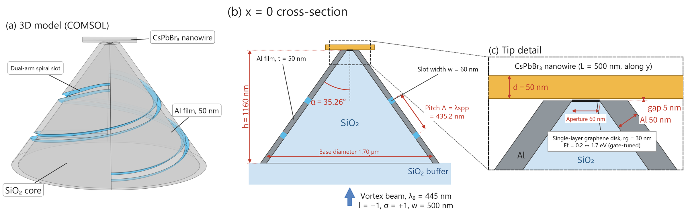
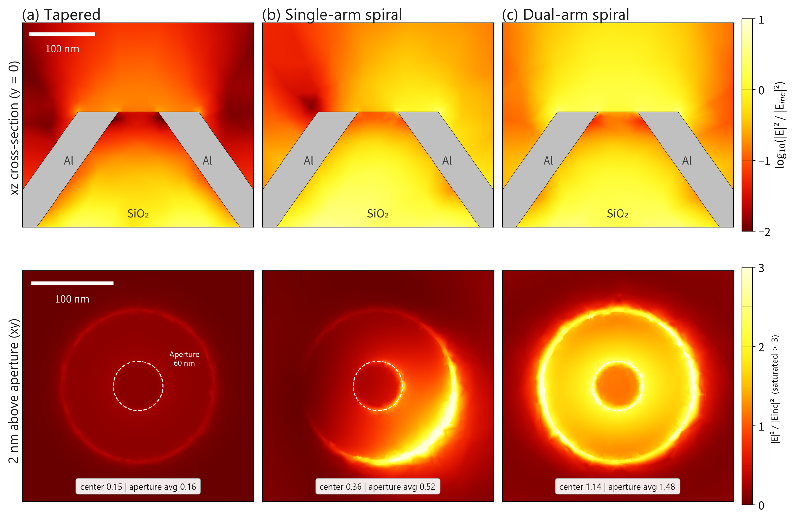
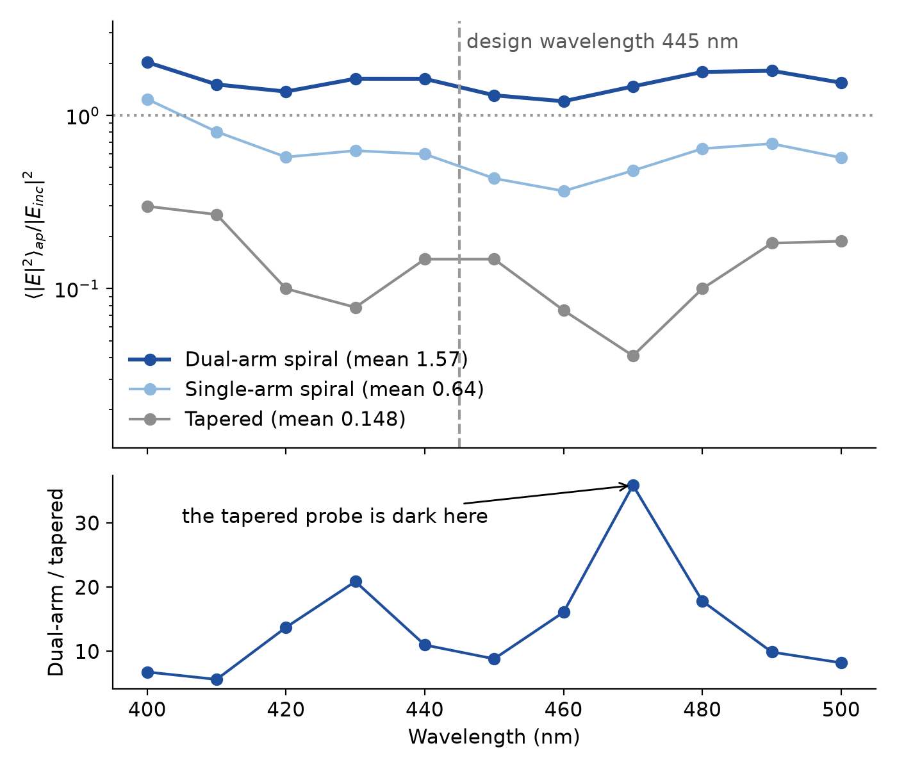
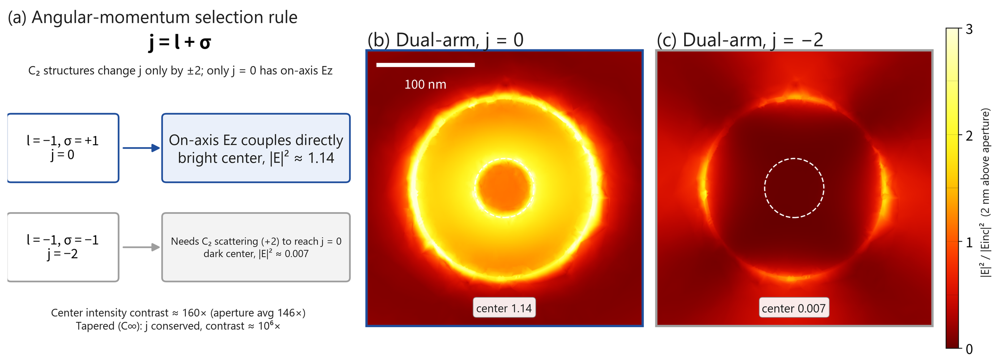
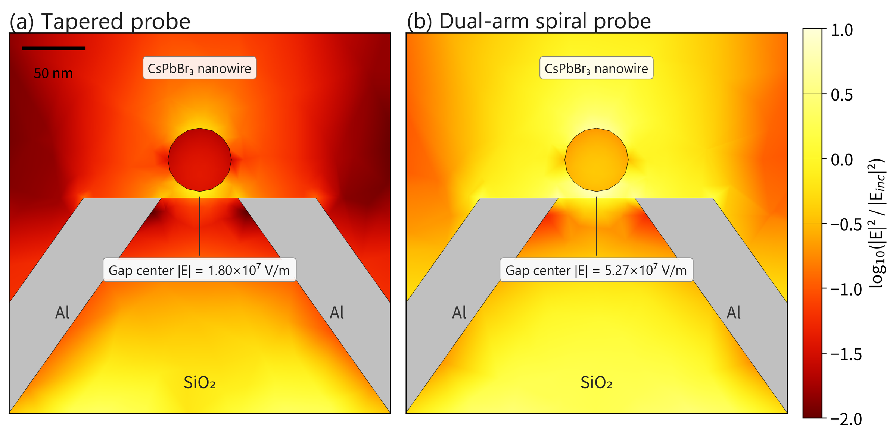
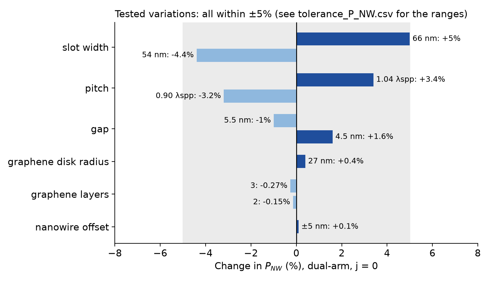
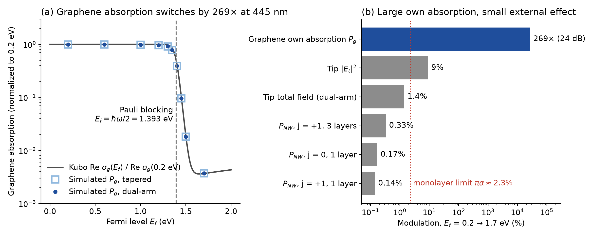
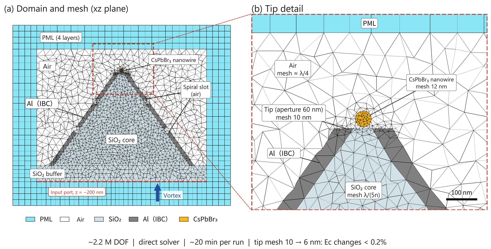

Active near-field focusing probe with a dual-arm spiral and graphene
Chia-Yu Lee, Yu-Cheng Wang, Li-Lun Chung · Chung Yuan Christian University · Poster, Taiwan Vacuum Society Annual Meeting, 2026
A 60-nm aperture is far smaller than a 445-nm wavelength, so a plain tapered probe delivers only 0.16 of the incident intensity to its tip. I used 3D COMSOL simulations to find out how much more a spiral slot could deliver through the same aperture, and whether graphene could switch that light electrically. This is a simulation study; no device has been fabricated.
Design
A one-turn dual-arm slot in the 50-nm Al film converts a vortex beam (l = −1, σ = +1) into surface plasmons. The pitch equals the plasmon wavelength, 435.2 nm, so the plasmons from both arms add in phase at the tip. A graphene disk covers the aperture, and a CsPbBr₃ nanowire 5 nm above it measures how much light the probe delivers.

The dual-arm probe focuses 9× more light
The dual-arm probe reaches 1.48 times the incident intensity at the aperture, against 0.163 for the tapered probe and 0.518 for a single arm. Its center field is 99.7% longitudinal, while the single arm shifts the hot spot to one side and mixes in 32% transverse field.

| Structure | Center field (V/m) | Aperture intensity / incident | Center |Et|/Ec | Gain |
|---|---|---|---|---|
| Tapered | 8.34×10⁶ | 0.163 | 0.13% | 1× |
| Single-arm | 1.31×10⁷ | 0.518 | 32% | 3.2× |
| Dual-arm | 2.34×10⁷ | 1.48 | 0.30% | 9.1× |
The gain is broadband. The band-averaged ratio over 400–500 nm is 10.6×, and the ratio per wavelength runs from 5.6× to 36×. The largest values come from dips in the tapered probe, so the band average is the fairer number.

Symmetry explains the focus
A C₂ structure can change the total angular momentum j = l + σ only by ±2, and only j = 0 has an on-axis Ez. The simulated center intensity falls from 1.14 at j = 0 to 0.007 at j = −2, a contrast of about 160×, as this rule predicts.

More light reaches the nanowire
With a nanowire 5 nm above the aperture, absorption rises from 0.135 to 1.31 mW for 1 W of input. Tested geometry changes stayed within ±5%. Pitch was tested at 0.90 and 1.04 λspp and the graphene radius only at 27 nm.


Graphene switches itself, not the probe
Above Ef = ħω/2 = 1.393 eV, Pauli blocking turns off graphene's interband absorption, which falls by 269× (24 dB). A separate Kubo calculation gives 272×. Yet nanowire absorption changes by only 0.14–0.33%. A monolayer absorbs at most πα ≈ 2.3% and responds only to the in-plane field, and the tip field is mostly Ez. This simple design is therefore not a useful modulator; a resonant or gap-plasmon structure would be needed to amplify the effect.

Method and checks
COMSOL Multiphysics 6.1 frequency-domain solver, full 3D model, about 2.2 million degrees of freedom, direct solver, about 20 minutes per run. Al uses an impedance boundary condition, graphene a Kubo surface conductivity, and PML layers surround the domain.

| Check | Result |
|---|---|
| Tip mesh 10 → 6 nm | center field < 0.2%, aperture average −2.5%, dual-arm/tapered ratio 9.09 → 9.01 |
| Mesh with nanowire | absorption and center field < 0.3% |
| Repeat run | about 1% |
| Graphene absorption on two meshes | absolute values differ by about 10%, ratio < 2%, so only ratios are reported |
| Kubo calculation | 272×, against 269× simulated |
| Incident peak field, analytic | 2.19×10⁷ V/m, matching the model |
Limitations
- The Al tip has sharp edges in the model, and CsPbBr₃ birefringence is not included.
- Ef = 1.7 eV is a very high doping level and would need ionic-liquid gating or similar.
- No experiment has tested these numbers.
Credits
Research led by Chia-Yu Lee, with co-authors Yu-Cheng Wang and Li-Lun Chung. The project began under Prof. Pi-Ju Cheng. Claude (Anthropic) helped write the poster text and organize this page and repository. References and data are in the repository.